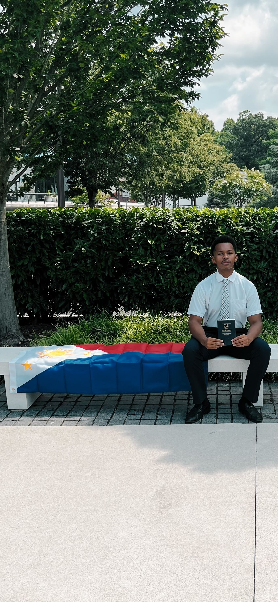

Hi, I’m Jaden Jenkins
I’ve been called to serve in the Philippines Manila Mission, and I couldn’t be more excited. I’m passionate about sharing the gospel, learning new cultures, and growing spiritually.
I'm from Waldorf, Maryland, I’m 18 years old, and I love baseball, going to the gym, and Fishing 😉. I’ve always felt a deep desire to serve, and after a lot of prayer and spiritual preparation, I knew this was the right path for me.
Fun Facts:
- ⚾ I played high school baseball
- 🧑💻 I love coding, hiking, and cooking
- 🎮 I try my best to fish, most of the time I get to catches..
- 🐔 I work at Chick-fil-A!
Thanks for visiting my site, I’m so excited to share this journey with you.
Stay Updated
Want to get updates from me while I'm serving my mission? Drop your email below and I'll keep in touch!